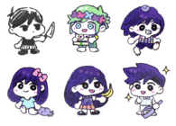
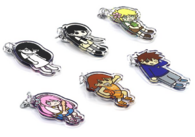
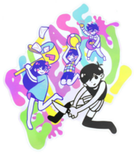

<div class="container mt-4">
  
 
  <div data-bs-spy="scroll" data-bs-target="#list-example" data-bs-offset="0" class="scrollspy-example" tabindex="0">
    
    <h4 id="list-item-1 ">Origin</h4>
    <p>OMORI was created as a much older boy on a blog by OMOCAT called omori ひきこもり, which lasted from 22 Dec 2011 to 14 Mar 2012. He introduces himself as OMORI, who likes to play old games. He wears a black tanktop, striped shorts, and long black socks.</p>
    <p>The blog features OMORI with simple phrases in the WHITE SPACE which are rather depressing or they contemplate about life. Common items shown in the blog are a black lightbulb, his cat, his laptop, his Game Boy, a tissue box, his blanket, and a knife. It contains some dark images and an insight into his character and depression. In a few of the scenes, he nearly kills himself.</p>
    <p>The blog appears to end when OMORI cannot access his laptop anymore. It is unknown whether or not this is intentional or coincidental.</p>
    <p>OMORI'S STORY is a short story about OMORI and his colorful neighbors. Besides the Kickstarter, this STORY and a POSTER were the only things sold as merchandise by OMOCAT. You can no longer buy the STORY in the OMOCAT SHOP.</p>
    <p>The OMORI SKETCHBOOK is featured on the OMORI GAME website. The SKETCHBOOK shows many drawings by OMORI, some shown in the game's SKETCHBOOK in WHITE SPACE.</p>
    <p>The OMORI GRAPHIC NOVEL was the initial idea for OMOCAT to bring OMORI's story to a larger project. It is now a discontinued graphic novel to make way for the OMORI game, as OMOCAT had a much bigger vision to tell this story.</p>
    <p> OMORI COMIC P01</p>
    
    <h4 id="list-item-2"> Game Support</h4>
    <p>OMORI Wiki is focused on creating the definitive guide to OMORI (GAME). But while we make an effort to be complete, we are not an official game support channel. Report issues on the game's Steam Logo.png <a href="https://steamcommunity.com/app/1150690/discussions/0/2995422276377408303/">STEAM BUG THREAD.</a> </p>
    
    <h4 id="list-item-3">Merchandise</h4>
    <p>Official merchandise has been created by <a href="https://www.omocat.com/">OMOCAT</a>  and is currently for sale on her website, including keychains, stickers, pins, and posters.</p>
    
    <h4 id="list-item-4">Gallery</h4>
     
    <div class="container">
      <div class="row">
        <div class="col"> </div>
        <div class="col"> </div>
        <div class="col"> </div>
      </div>
    </div>

   
  </div>
</div>